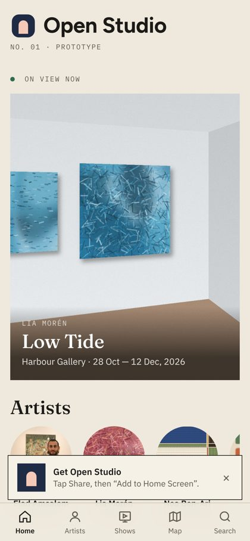
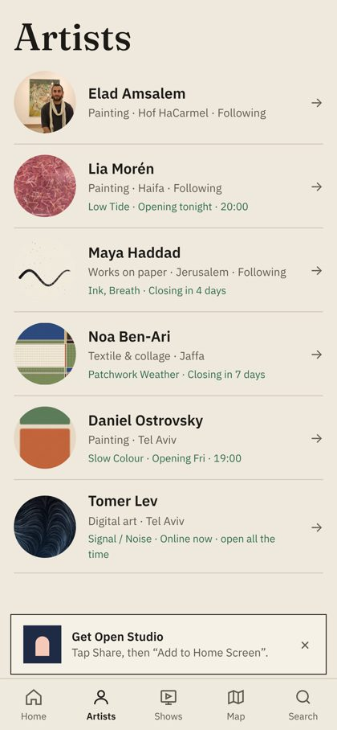
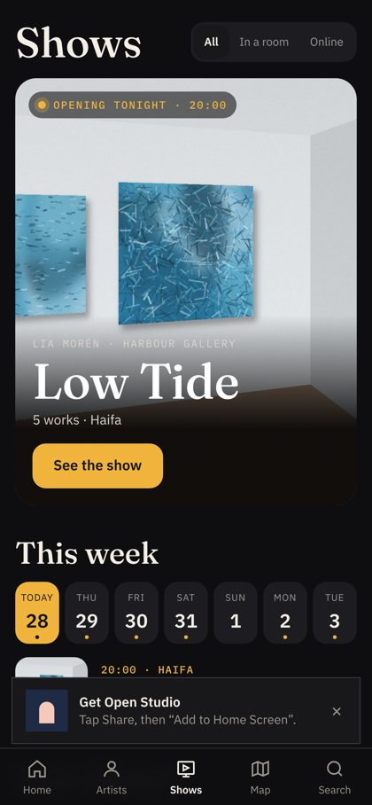
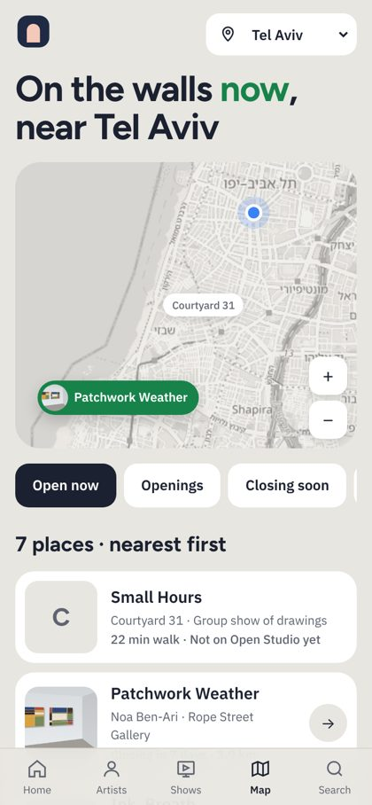
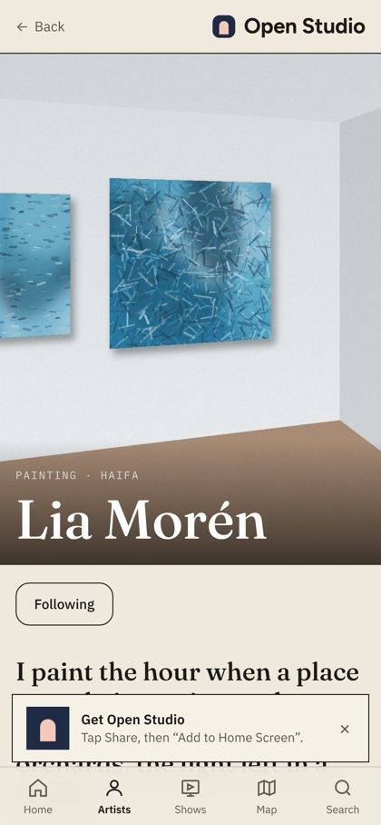
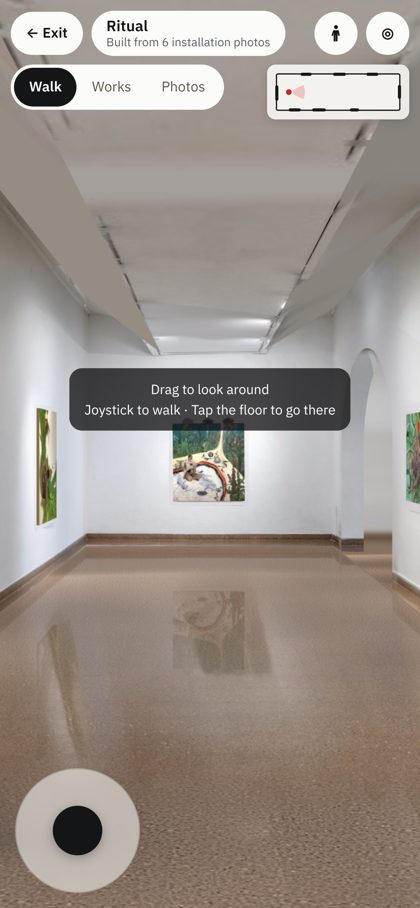
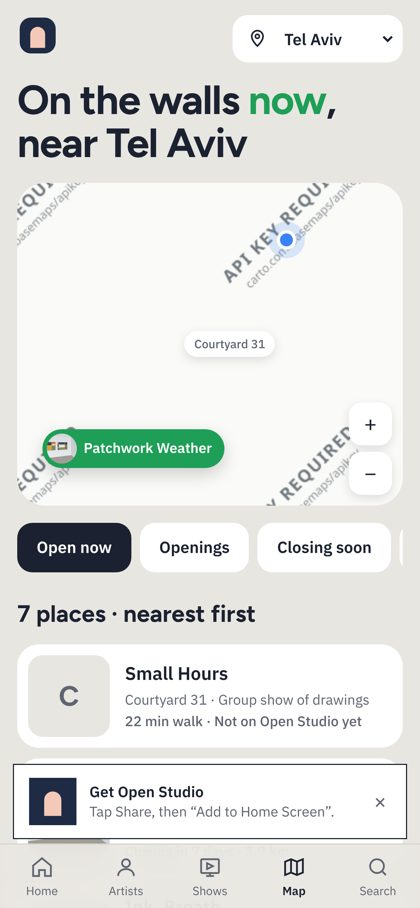
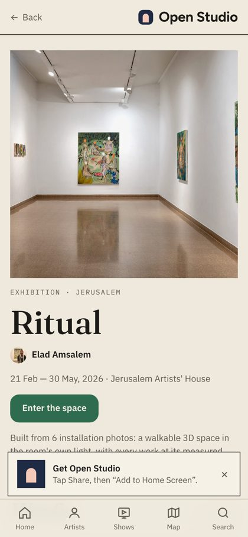

מה בנינו ומה בדקנו בפועל בטלפון, מה תיקנו כבר, מה עוד חוסם, איך נראה עולם האפליקציות ב‑2026, איזו טכנולוגיה, כמה זה עולה, איך פותרים את הצילום, ובאיזה סדר בונים.
נכתב על ידי Claude בכובע של מחלקת פיתוח מוצר, 28.10.2026, על בסיס הקוד בענף studio, בדיקה מעשית של האפליקציה החיה בהדמיית אייפון, ומחקר עדכני. משלים את דוח הייעוץ העסקי, מהדורה 2: אותם שלבים, אותם תנאים.
| צוות | מה בדק |
|---|---|
| עולם האפליקציות וטכנולוגיה | Sensor Tower, Appfigures, RevenueCat, AppsFlyer; WebKit; Apple Guidelines; Supabase, Firebase, Cloudflare, PostHog, Sentry; Veracode; ביצועי WebGL באייפון |
| טכנולוגיית צילום | Gaussian Splatting, Scaniverse, Polycam, Teleport, Luma; VGGT, MapAnything, DUSt3R; Spark, SOG, gsplat; RoomPlan, Matterport; נאמנות צבע; רישיונות |
| אנלוגים ולקחים | Letterboxd, DailyArt, Partiful, Strava, Untappd, Wrapped, Vero, Are.na |
| קול הלקוח | ביקורות בחנויות, סקרי אמנים וגלריות |
| יציאה לשוק, ישראל | (משותפים עם הדוח העסקי) |
כל מספר מסומן: מאומת ממקור ראשוני או מדידה שלנו; משני מסיקור או תקציר, לבדיקה; הערכה חישוב שלנו. אתרי ספקים רבים (supabase.com, posthog.com, matterport.com) חסומים ברשת הסביבה, ולכן מחירים רבים משני.






| תחום | מה קיים | מצב |
|---|---|---|
| אפליקציית הקהל | 5 לשוניות; עמוד אמן עם Follow ויומן סטודיו; תערוכה כאלבום; עבודה בגודל אמיתי; מפה עם סינון; חיפוש | עובד |
| הסיור התלת‑ממדי | חדר מצילומי ההצבה: אור, קירות, רצפה עם השתקפויות, קשתות, עבודות במקום ובגודל, מפה קטנה, מצב "עבודה הבאה" | עובד; פגם בתקרה |
| צינור הבנייה | זיהוי עבודות בתמונות, מדידת החדר, אפייה, שני שלבי בדיקה, פרסום רק כשהכול עובר | עובד, בשרת |
| הצד של האמן | כניסה, פרופיל, עבודות עם בדיקת תמונה, תערוכות, סטטוס סיור | אב‑טיפוס, נשמר בדפדפן בלבד |
| תוכן | אמן אמיתי אחד ו‑3 תערוכות; עולם דמו: 5 אמנים, 32 עבודות, 9 תערוכות, 9 קליפים, 6 גלריות | דמו לא מסומן |
| תשתית | GitHub Pages; שתי עבודות אוטומטיות (בניית סיורים, פרסום אפליקציה); בדיקת אפליקציה לפני פרסום | חינם |
מדידה שלנו מאומת, 4G איטי + מעבד ×4.
שירות המפות CARTO התחיל לדרוש מפתח, ובמקום מפה כל אריח החזיר תמונה תקינה עם הכיתוב "API KEY REQUIRED". השרת ענה 200, התמונה נטענה, ושום דבר לא נכשל: המבקר פשוט ראה מפה ריקה.
למה לא נתפס קודם: בצילומי המסך שלנו במחשב, אריחי המפה הוחלפו בתמונה מקומית כדי לחסוך רשת. כך הבדיקה ראתה מפה, והטלפון לא.
התיקון: אריחי OpenStreetMap, מרוככים לגוון הנייר של העמוד. נבדק בהדמיית טלפון, פורסם (גרסה b0b011c), ונבדק שוב באתר החי.
השער החדש: studio/app/check_app.py רץ בשרת לפני כל פרסום של האפליקציה. הוא מוריד אריח ממרכז תל אביב מהכתובת שהאפליקציה באמת משתמשת בה, ובודק שזו מפה: מאות צבעים ופרטים בכל מקום. אם לא, האפליקציה לא מתפרסמת. הוכחנו שהוא עובד: החזרנו את הכתובת הישנה, והוא עצר.

| # | חומרה | ממצא | הראיה | מה עושים |
|---|---|---|---|---|
| 1 | חוסם פנייה | אין הרשמה אמיתית: "Send me a sign‑in link" לא שולח, הסטודיו נשמר בדפדפן, אמן חדש דורש עריכת קבצים | artist.js:5, :315 | Supabase: חשבונות, העלאה, רשומת זכויות לכל עבודה |
| 2 | חוסם פנייה | תוכן דמו בדיוני מעורבב עם האמן האמיתי, בלי סימון ("Opening tonight 20:00"; אמני דמו מסומנים מראש כ‑Following) | מסכי בית, תערוכות | להסיר או לסמן בכל מסך |
| 3 | חוסם פנייה | כל קישור משותף מציג אותו כרטיס: ניתוב hash, אין תיאור ואין Open Graph. סורקי תצוגה מקדימה לא מריצים JavaScript ולא רואים מה שאחרי # | index.html:6; 0 כתובות ב‑sitemap | נתיבים אמיתיים + עמוד HTML סטטי לכל תערוכה/אמן/עבודה בזמן הפרסום, עם og:image |
| 4 | חוסם פנייה | 2 מ‑3 תערוכות בלי סיור; הודעת המצב בשפה פנימית; התערוכות לא מאושרות | 8/15, 3/8 עבודות | פרוטוקול צילום, שיפור הצינור, ניסוח ציבורי |
| 5 | גבוה | הסיור כבד; LCP 5.7–8.6 שניות | מדידה, עמוד 5 | תמונות רספונסיביות, טעינה הדרגתית, KTX2, תקציב בבדיקה |
| 6 | גבוה | פגם בתקרת Ritual: משטחים אפורים משופעים ופסים, בעוד שבתמונות התקרה שטוחה | עמוד 15 | תיקון + בדיקה שהייתה תופסת, והוכחה (לפי CLAUDE.md) |
| 7 | חוסם השקה | noindex, sitemap ריק | SEO 58 | להסיר בהשקה, עם העמודים הסטטיים |
| 8 | בינוני | באנר ההתקנה מכסה תוכן בכל עמוד, לפני שהמבקר ראה ערך | כל המסלולים | להציג רק אחרי סיור שנצפה או מעקב ראשון |
| 9 | בינוני | נגישות SPA: פוקוס לא עובר, אין הכרזת עמוד, אין קישור דילוג; ~3.6 יעדי מגע קטנים מ‑44px בעמוד | axe | ניהול פוקוס, aria‑live, הגדלת יעדים |
| 10 | בינוני | אין עברית ו‑RTL: lang="en", left/right ב‑CSS 38 פעמים, גופנים בלי עברית | קוד | CSS לוגי, dir, גופן עברי; החלטה על שפה |
| 11 | נמוך | כותרת לא מוברחת בקוד ההטמעה; קובץ אחד חסר מפיל הכול; מטמון תמונות בלי תקרה; PNG של 4.6MB שלא בשימוש; אין תמונת פתיחה ל‑iOS | artist.js:218 | תיקונים נקודתיים |
המסך הראשון אומר "NO. 01 · PROTOTYPE · ON VIEW NOW" ומציג תערוכה בדיונית. משפט שמסביר מה המוצר קיים רק במסך האמנים. הסיור האמיתי היחיד נמצא שלוש הקשות פנימה: בית, אמן, תערוכה, "Enter the space".
המראה חזק, וזה לא מובן מאליו: "נקי ומזכיר ספוטיפיי" עובד. אבל מבקר שהגיע מקישור בוואטסאפ צריך לקבל תוך שנייה תשובה ל"מה זה ולמה לי".

Braze על נתוני AppsFlyer משני. היעד שלנו, 3–8%, הערכה.
ההורדות עמדו במקום (Sensor Tower: ~150 מיליארד; Appfigures: ירידה חמישית ברציפות) משני. הקושי הוא לא לבנות אלא להגיע ולשמור. כל השקעה בפיתוח שלא משרתת חזרה שבועית היא בזבוז.
| יכולת | אפליקציית ווב באייפון (2026) | אפליקציה בחנות |
|---|---|---|
| התקנה | ידנית (שיתוף ← הוסף למסך הבית); ב‑iOS 26 נפתח כאפליקציה כברירת מחדל משני | מהחנות |
| Push ותגי ספירה | כן מ‑16.4, רק אחרי הוספה למסך הבית ובעקבות פעולת משתמש מאומת | כן |
| מצלמה ווידאו | כן, דרך הדפדפן | כן, עם שליטה מלאה |
| אחסון לא מקוון | עד 60% מהדיסק, אבל עלול להימחק מאומת: מטמון, לא עותק יחיד | יציב |
| WebGPU | מופעל כברירת מחדל ב‑iOS 26 משני | כן |
| גילוי בחנות | אין | כן (ASO) |
| עדכון | מיידי | דרך בדיקת Apple (תוכן מהשרת: מיידי) |
| עלות | 0 | 99$ לשנה (Apple), 25$ פעם אחת (Google) |
PWA (היום): מהיר, חינם, קוד אחד. לבטא
Capacitor: אותו קוד בתוך אפליקציה, עם יכולות טלפון. הדרך היחידה שמשמרת את three.js והקוד הקיים משני. כשיש סיבה
React Native / Flutter: כתיבה מחדש, ועדיין WebView לצופה. לא
ילידי מלא: שתי אפליקציות. לא
לפי סעיף 3.1.1, מנוי שפותח יכולות באפליקציית iOS חייב IAP. בחנות הישראלית אסור קישור לתשלום חיצוני: הפטור ל"אפליקציות קריאה" מכסה מגזינים, ספרים, מוזיקה ווידאו, לא אמנות מאומת. בארה"ב מותר קישור, והעמלה בדיון בבית המשפט העליון מאומת.
| חלק | בחירה | למה |
|---|---|---|
| אפליקציה | הקוד הקיים (PWA); Capacitor בעתיד | בלי שכתוב |
| חשבונות, נתונים | Supabase: Postgres, Auth, הרשאות ברמת שורה (RLS) | יחסי, פתוח, 25$ ל‑100K משתמשים בחודש משני |
| סיורים, תמונות, העלאות | Cloudflare R2 | 0.015$ לג'יגה בחודש, בלי עלות תעבורה משני |
| וידאו (אם יהפוך לליבה) | Cloudflare Stream | 5$ ל‑1,000 דקות שמורות, 1$ ל‑1,000 נצפות משני |
| בניית סיורים | GitHub Actions היום; GPU שכור לשלב Splatting | ~1.4–4$ לשעת GPU משני |
| מדידה ודגלים | PostHog | ~1M אירועים בחודש חינם משני |
| שגיאות | Sentry (או PostHog) | 5K שגיאות בחינם משני |
| מפה | OSM היום; MapTiler/Stadia עם מפתח לפני השקה | תנאי שימוש |
| עמודי שיתוף | HTML סטטי לכל תערוכה/אמן/עבודה בזמן הפרסום | תצוגה מקדימה בוואטסאפ |
| שלב | משתמשים | מה רץ | עלות חודשית הערכה |
|---|---|---|---|
| בטא סגורה | עד 1,000 | Supabase חינם, R2 חינם (10GB), PostHog חינם, GitHub Pages | 0–30$ |
| בטא ציבורית | ~5,000 | Supabase Pro 25$, R2 ~50–100GB, PostHog חינם | 30–80$ |
| השקה | ~20,000 | + מפה עם מפתח, GPU לסיורים, Sentry | 80–250$ |
| חנויות | — | 99$ לשנה + 25$ פעם אחת | ~9$ |
סיור של 200 מגה‑בייט שנצפה 10,000 פעמים מייצר 2 טרה‑בייט תעבורה. ב‑R2 זה 0$; באחסון של Supabase, ~157$ בחודש הערכה. לכן הסיורים, התמונות והווידאו יושבים ב‑R2, והמסד רק מצביע עליהם.
היום כל טקסט עובר esc(), וזה עובד כי כל התוכן שלנו. ברגע שאמנים יכתבו כותרות ותיאורים, החמצה אחת של esc() בתבנית היא XSS שמור. כבר נמצא מקום אחד כזה, בקוד ההטמעה (artist.js:218).
וחשוב מזה: הפרויקט נכתב ברובו בעזרת AI. זה לא רע, כי זה מה שאפשר להתקדם כל כך מהר. אבל לפי המחקר זה בדיוק המקום שבו נכנסות פגיעויות. התשובה היא אותה תשובה שכבר עובדת בסיורים: שער אוטומטי שלא נותן לפרסם.
| מדד | היום מאומת | יעד הערכה |
|---|---|---|
| בקשות | 81 | עד 40 |
| משקל כולל | 7.73MB | עד 4MB לחדר נראה |
| מתוכו: קבצי הסיור | 4.73MB, 47 קבצים | — |
| החדר נראה, 4G איטי | 25.2 ש' | עד ~10 ש' |
| סוף ההורדות, 4G איטי | 43.8 ש' | עבודות נטענות בזמן ההליכה |
| בלי האטה | 8.2 ש' | עד 3 ש' |
877KB ו‑631KB: קבצי JPEG מקוריים של עבודות, במקום הגרסה הקטנה שכבר קיימת. 372KB: עבודה ב‑WebP. ~365KB כל אחת: 6 תמונות ההצבה. מאומת
Safari ב‑iOS הורג עמודי WebGL בלחץ זיכרון הרבה לפני שה‑RAM נגמר, ו‑Apple לא מפרסמת מגבלה משני. יש דיווחים על עמודים כבדי טקסטורות שנטענים מחדש בלולאה. "גם כמה טקסטורות 4K עלולות להיות יותר מדי"; JPEG לא מקטין זיכרון GPU, KTX2 כן משני.
| תערוכה | מה היה | מה נמצא | תוצאה |
|---|---|---|---|
| Ritual | 6 צילומי הצבה, 10 עבודות | כל העבודות | סיור חי, 18/18 בדיקות |
| Nature of Man | צילומים חלקיים, 15 עבודות | 8 מ‑15; 44% מהקירות | לא נבנה |
| תערוכת בוגרים | צילומים חלקיים, 8 עבודות | 3 מ‑8; 47% מהקירות | לא נבנה |
ששת צילומי ההצבה של Ritual: תקרה שטוחה ולבנה עם מסילות תאורה.
במבט הפתיחה של הסיור החי, התקרה מוצגת כמשטחים אפורים משופעים עם פסים, בעוד שבצילומים היא שטוחה. הסיור עבר 18 מתוך 18 בדיקות. לפי כללי העבודה: מתקנים, מוסיפים בדיקה שהייתה תופסת, ומוכיחים אותה על ידי החזרת הבאג. זו המשימה הבאה של המחלקה, מיד אחרי הדוח.
כשהצילום מלא, הצינור עובד ואפילו יפה. כשהוא חלקי, הוא נכשל, ובצדק: בדיקה שמונעת חדר לא נכון היא תכונה. לכן הצעד הראשון הוא לא אלגוריתם אלא פרוטוקול צילום ובדיקת כיסוי בזמן הצילום, כשהגלריסט עוד עומד בחלל.
| כלי | מה הוא | מחיר | מתאים לנו? |
|---|---|---|---|
| Scaniverse (Niantic Spatial) | אימון על הטלפון עצמו, הושק מחדש 4/2026 | חינם | לצילום מלווה, לא לתמונות של גלריה |
| Polycam, KIRI | ענן; וידאו או מאות תמונות | בתשלום | אותו דבר |
| Varjo Teleport | איכות גבוהה | ~30$/חודש משני | יקר לכל תערוכה |
| Luma | השכבה החינמית בוטלה ב‑2026 משני | בתשלום | לא |
| Matterport | אייפון או מצלמת 360 | לפי מספר חללים מאוחסנים | יקר לתערוכות קצרות; זה הפער שלנו |
| Apple RoomPlan | מישורי קיר מדויקים, הדרכה בזמן צילום | חינם | רק LiDAR ואפליקציה ילידית: שלב Capacitor |
מחקר אקדמי צילם חדר אחד באייפון ב‑430 תמונות, ועדיין נשארו ערפול וארטיפקטים משני. Splatting לבד לא פותר כיסוי חלקי.
| רכיב | מה עושה | רישיון | |
|---|---|---|---|
| MapAnything (Meta, CMU) | מצלמות וגאומטריה צפופה מתמונות לא מסודרות; מייצא ל‑COLMAP ול‑gsplat | משקולות map-anything-apache: Apache 2.0 מאומת | מותר |
| VGGT (פרס CVPR 2025) | "מתמונה אחת, מכמה או ממאות", בדרך כלל בפחות משנייה | רק VGGT‑1B‑Commercial, בטופס בקשה מאומת | מותר, בבקשה |
| gsplat | אימון Splat, עד פי 4 פחות זיכרון GPU | Apache 2.0 מאומת | מותר |
| Spark (World Labs) + SOG | צופה three.js; פורמט קטן פי 15–20 מ‑PLY משני | MIT מאומת | מותר |
| קוד Inria המקורי | הייחוס של Gaussian Splatting | לא מסחרי בלבד מאומת | אסור |
| DUSt3R, MASt3R, Pi3, Apple SHARP | שחזור מתמונות | CC‑BY‑NC / מחקר מאומת | אסור |
| World Labs Marble | עולם שלם בבינה גנרטיבית | מסחרי מ‑Pro | לא לתיעוד: ממציא תוכן |
MapAnything או VGGT רצים בשרת על התמונות שהועלו, ובתוך שניות מחזירים: אילו קירות לא נראו, אילו עבודות חסרות. האפליקציה מבקשת את התמונה החסרה כשהגלריסט עוד בחלל. זה תוקף ישירות את הכשל של Nature of Man ושל תערוכת הבוגרים.
MapAnything‑Apache או VGGT‑Commercial לשחזור; אחריו gsplat לאימון; אחריו SOG לדחיסה; ובסוף Spark, בתוך הצופה הקיים. יעד בטלפון: פחות ממיליון גאוסיאנים, עשרות מגה‑בייט לחדר. דיווח אנקדוטלי: קובץ גדול נטען ב‑Safari נייד רק מתחת ל‑60MB משני. צריך לבדוק שבתלויות של gsplat אין קוד של Inria.
Splatting ופוטוגרמטריה "אופים" בוהק ואור תלוי‑זווית לתוך הצבע. מוזיאונים פותרים את זה בתאורה מקוטבת ובצילום ייעודי של היצירה מאומת. לכן: החדר יהיה Splat או קופסה משוחזרת, והעבודות יישארו תמונות חזיתיות עם ניהול צבע על מישורים, ואזורי העבודות יחוררו מה‑Splat כדי שלא תהיה כפילות. Vortic בנתה את אותו מבנה ב‑2020.
לא ממלאים אזור שלא צולם במילוי גנרטיבי. ברשומה של תערוכה אמיתית זה עלול להמציא עבודות או אדריכלות: בעיית אמון ובעיה משפטית מול האמנים. קיר ורצפה ניטרליים, כמו היום.
שכירות 1.4–4$ לשעה משני; לחדר 0.5–2$ הערכה. GitHub Actions בלי GPU: RunPod, Lambda או Modal.
המחקר על אנלוגים מצביע על מנגנונים עם ראיות. המחלקה מתרגמת אותם לרשימת עבודה, לפי מה שמחזיר אנשים כל שבוע.
| עדיפות | פיצ'ר | מנגנון והראיה | מדד |
|---|---|---|---|
| P0 | הרשמה, העלאה ועריכה לאמן ולגלריה; רשומת זכויות | בלי זה אין מוצר | הפעלת אמן |
| P0 | עמודי שיתוף עם תצוגה מקדימה (תערוכה, אמן, עבודה) | כל השיתוף עובר בוואטסאפ (90%+ משני) | כניסות מקישור |
| P0 | הזמנה לפתיחה: אישור הגעה בלי אפליקציה ובלי חשבון, תזכורת | Partiful: +400% בשנה הערכה | אישורי הגעה, הגעה בפועל |
| P0 | "פתיחות השבוע" בעיר ובשכונה, עם מפה | ArtRabbit, Artips, Tokyo Art Beat | מבקרים שבועיים |
| P1 | התראה: "אמן/גלריה שאתם עוקבים אחריהם פותחים" | Strava, מועדונים; Push אחרי הוספה למסך הבית | חזרה שבועית |
| P1 | כרטיס שיתוף לתערוכה ולעבודה, עם קרדיט וקישור | Xiaohongshu, שיתופים מחדש באינסטגרם | שיתופים |
| P1 | נתוני צפייה לגלריה ולאמן ("מי ראה את התערוכה") | Untappd: העסק משלם על נתונים | המרה לתשלום |
| P1 | מסך צילום מודרך + בדיקת כיסוי | Zillow, RoomPlan; הכשל שלנו | הצלחה בניסיון ראשון |
| P2 | "התערוכות שלי": יומן ביקורים, עבודות שנשמרו, רשימות | Letterboxd: Diary + Lists | ביקורים מתועדים |
| P2 | "השנה שלך באמנות", חינם, לשיתוף | Wrapped: 500M שיתופים ביום מאומת; Strava שגבתה ספגה כעס | שיתופים בדצמבר |
| P2 | קליף סטודיו יומי בבית | DailyArt | פתיחות יומיות |
| P3 | עברית מלאה ו‑RTL | החלטה עסקית | — |
| P3 | Capacitor וחנויות | רק כשיש ערך ילידי | — |
| שלב | מה בונים | תנאי יציאה הנדסיים |
|---|---|---|
| 0 · מוכנות נוב'–דצמ' 2026 | Supabase: חשבונות, הרשאות, העלאות ל‑R2, רשומת זכויות · הצד של האמן מחובר לשרת · דמו מוסר או מסומן · עמודי שיתוף סטטיים · תמונות רספונסיביות, הסיור מתחת לתקציב · תיקון התקרה + בדיקה · PostHog ו‑Sentry · מדיניות פרטיות ותנאים | אמן חדש נרשם ומעלה תערוכה בלי מפתח · קישור בוואטסאפ מציג תמונה ושם · החדר נראה תוך ~10 ש' ב‑4G · בדיקות RLS עוברות · כל הבדיקות בשרת ירוקות |
| 1 · גרעין ינו'–מרץ 2027 | הזמנות לפתיחות · "פתיחות השבוע" · נתוני צפייה · מסך צילום מודרך (גרסה 1) · QR לכל תערוכה | אפס קריסות שדווחו בשבוע · 3 סיורים של אחרים נבנו · התראות עובדות על אייפון אמיתי |
| 2 · צילום ושיא אפר'–אוג' 2027 | MapAnything/VGGT ובדיקת כיסוי בשרת · GPU שכור · Splat לחדר (ניסוי) · כיסוי צבע טרי · חבילה לתערוכות בוגרים | הצלחה בניסיון ראשון 70% · עלות לחדר מתחת ל‑2$ · סיור Splat עובר את בדיקת הטלפון |
| 3–4 · שותפות והרחבה ספט' 2027–2028 | יומן ביקורים · "השנה שלך באמנות" · עברית · Capacitor אם יש ערך ילידי · מנוע הצילום כ‑API לשני לקוחות בחו"ל · ספק מפה עם מפתח | האפליקציה עוברת סעיף 4.2 · מנוע הצילום רץ ללקוח חיצוני בלי מעורבות שלנו |
שחרור קטן בכל פעם, כל אחד עובר את הבדיקה האוטומטית בטלפון, ונבדק בעין בגודל אייפון. כל שינוי בסיור נבנה ונבדק בשרת. "גמור" = עובד בטלפון, לא במחשב.
אותם שלבים ואותם תאריכים: התנאים לפני פנייה = תנאי היציאה של שלב 0. הפנייה לאמנים בינואר 2027 רק אם כולם ירוקים.
| אירוע | למה |
|---|---|
| open (source: link / qr / home) | מאיפה מגיעים |
| exhibition_view, artist_view | מה מעניין |
| follow / unfollow | הפעלה |
| rsvp, reminder_open, attend | לולאת הפתיחה |
| tour_enter, tour_time, works_seen | האם הסיור מחזיק |
| tour_fail (reason) | קריסות, זיכרון, רשת |
| share (kind) | לולאת ההפצה |
| install_prompt, installed, push_ok | משפך ההתקנה |
| artist_signup, upload, capture_start, capture_ok | הצד הקשה |
| space_built (ok / fail, reason) | הצלחת הצינור |
| תפקיד | מה עושה | היום | מתי להוסיף אדם |
|---|---|---|---|
| מייסד ומנהל מוצר | חזון, קשר עם אמנים וגלריות, החלטות | המייסד | — |
| הנדסה | אפליקציה, תלת‑ממד, תשתית | Claude | מהנדס/ת במשרה חלקית אחרי תנופה, לשמירת ידע ותורנות |
| QA | בדיקות אוטומטיות בשרת ובטלפון | Claude + המייסד על אייפון | בודקי בטא מהקהילה |
| עיצוב | חוויה, מותג, שם | Claude + המייסד | פרילנס לשבועיים, בשלב היסודות (שם ומותג) |
| קהילה ועולם האמנות | גלריות, אמנים, פתיחות, משוב | המייסד | חצי משרה בבטא הסגורה |
| צילום | צילום תערוכות בפיילוט | המייסד | צלם/ת לפי תערוכה, כשירות בתשלום מלא |
| משפטי | תנאים, פרטיות, זכויות, שם | — | עו"ד, חבילה חד‑פעמית לפני הבטא |
| אבטחה | סקירה חיצונית | — | לפני השקה ציבורית |
| החלטה | המלצת המחלקה |
|---|---|
| תוכן הדמו | להסיר מהאפליקציה הציבורית ולשמור כ"מצב הדגמה" נפרד |
| שפה | אנגלית עכשיו; עברית מלאה לפני השקה ציבורית, לפי מה שהאמנים יגידו בראיונות |
| Supabase או Firebase | Supabase: נתונים יחסיים, מחיר צפוי, אפשר לארח לבד |
| ספק מפה לפני השקה | MapTiler או Stadia, עם מפתח והגבלת דומיין |
| אפליקציה בחנויות | לא לפני שלב 3; ואז Capacitor, ומכירה בווב |
| תקציב תשתית | עד 50$ בחודש בבטא; תקרות ואזעקות |
עולם האפליקציות: Sensor Tower State of Mobile 2026 (דרך The Batch); Appfigures; RevenueCat State of Subscription Apps 2026; Braze/AppsFlyer; StatCounter Israel 8/2026.
ווב וחנויות: WebKit blog (Push, Badging, Storage policy); Apple App Review Guidelines 3.1.1, 3.1.3(a), 4.2; Apple Developer Forums; Oyez (25‑1311); SplitMetrics; PkgPulse.
תשתית: JetAdmin (Supabase 2026); Cloudflare R2 ו‑Stream pricing; AgentDeals (PostHog); Sentry.
אבטחה: Veracode 2025; Tenable CVE‑2025‑48757; Superblocks.
ביצועים: WebKit Bugzilla 289601; three.js forum; PlayCanvas forum.
צילום: GitHub: facebookresearch/vggt, facebookresearch/map‑anything, nerfstudio‑project/gsplat, sparkjsdev/spark; ScanCode LicenseDB (Inria); HF apple/Sharp; PlayCanvas streaming; ar‑go; Radiance Fields; mkhr.co.jp; LighthouseGS, PanoPlane (arXiv); ISPRS 2026; Magnopus; Apple RoomPlan; Zillow Capture Guide 2023; Spheron.
אנלוגים: The Ringer, Wikipedia (Letterboxd); TechCrunch (Wrapped 2025); NBC/CNBC (Partiful); AppBrain, 9to5Mac (DailyArt); road.cc (Strava); Republic (Are.na).
הבדיקה המעשית: מדידות שלנו, 28.10.2026: Playwright, axe‑core, Lighthouse, 149 מסלולים; research_notes/app_audit.md.
הכול, עם קישור לכל נתון: studio/design/reports/reports/מחקר עומק Open Studio.md ותיקיית research_notes/ בענף studio.
| זמן | ייעוץ עסקי | פיתוח מוצר |
|---|---|---|
| נוב'–דצמ' 2026 | ראיונות וסקר שטח; עו"ד: שם וטיוטות; עוסק מורשה | הרשמה ו‑backend; דמו; עמודי שיתוף; משקל הסיור; התקרה |
| ינו'–מרץ 2027 | גרעין בקריית המלאכה; 3–5 סיורי קונסיירז' בתשלום | הזמנות לפתיחות; "פתיחות השבוע"; נתוני צפייה; צילום מודרך |
| אפר'–אוג' 2027 | חברה ותנופה; צבע טרי; תערוכות בוגרים | MapAnything/VGGT; בדיקת כיסוי; GPU |
| ספט' 2027–2028 | שותפות עירונית; ירושלים; פיילוט בחו"ל | יומן ביקורים; "השנה שלך"; עברית; Capacitor אם צריך |